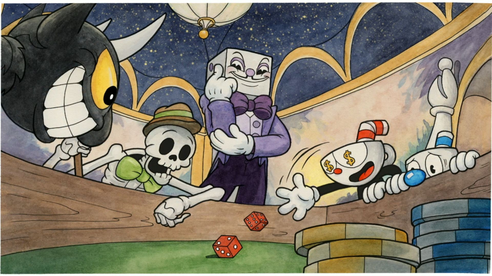
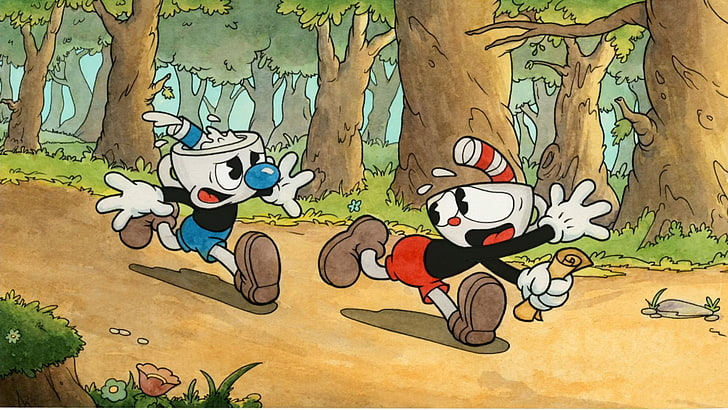
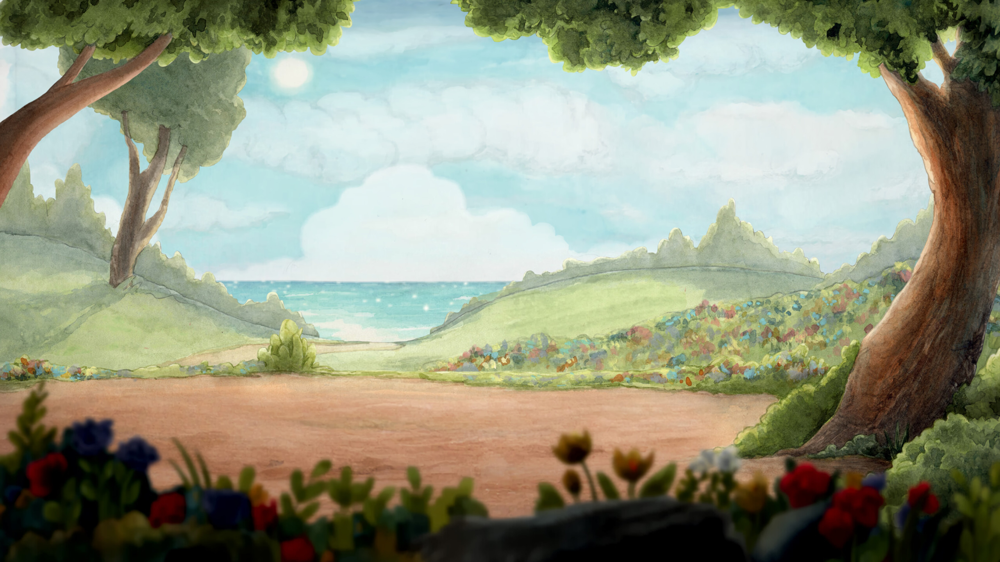
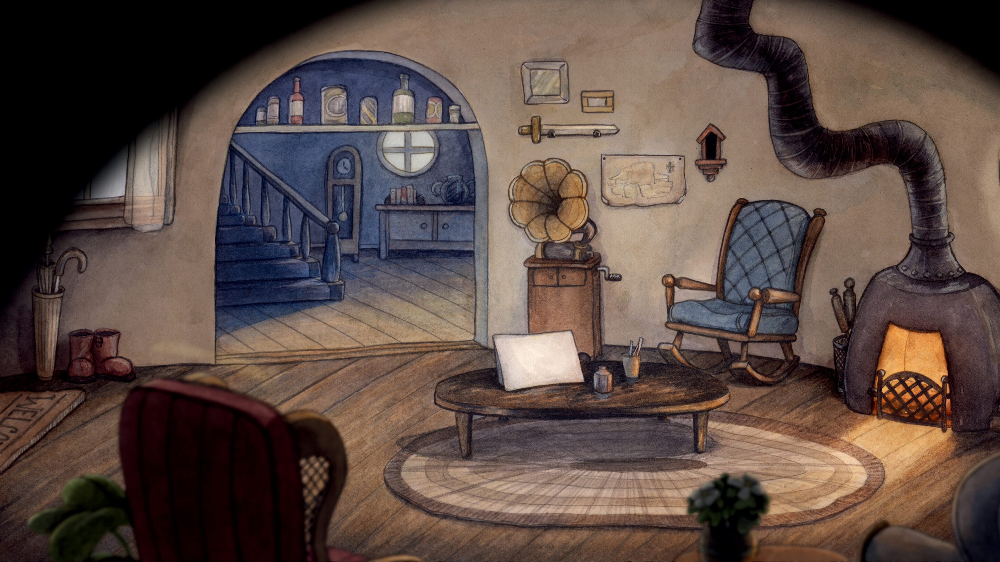
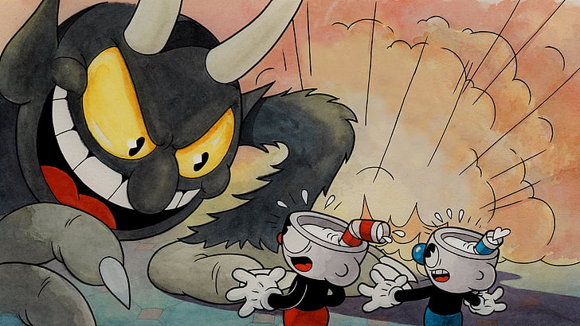

Cuphead é um jogo de ação e tiros clássico, com enorme ênfase nas batalhas de chefes. Inspirado nas animações infantis da década de 1930, os visuais e efeitos sonoros foram minuciosamente recriados com as mesmíssimas técnicas dessa era, com destaque para desenhos feitos à mão, fundos em aquarela e gravações originais de jazz.